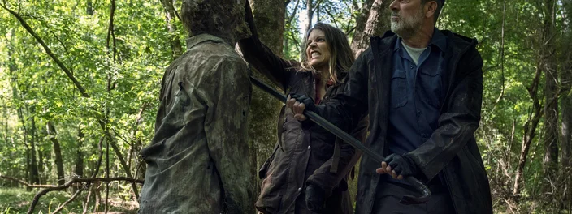
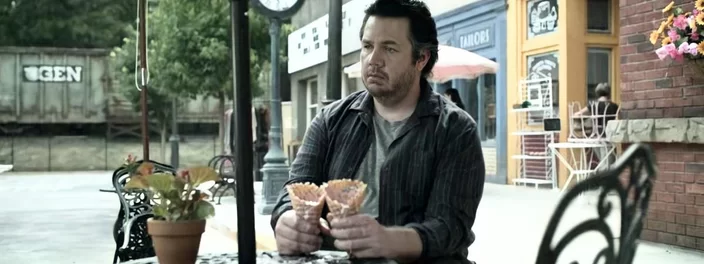

Noticias TWD
HOME
PERSONAGENS
ULTIMAS NOTICIAS
The Walking Dead: Jeffrey Dean Morgan
critica fãs 'tóxicos' da série; veja!

The Walking Dead: Lauren Cohan comenta final da 2ª parte da 11ª temporada

The Walking Dead 11x11: Eugene se envolve em grande trama (recap)
Cadatre-se e receba todas noticias:
Nome:
E-mail:
Telefone:
Enviar